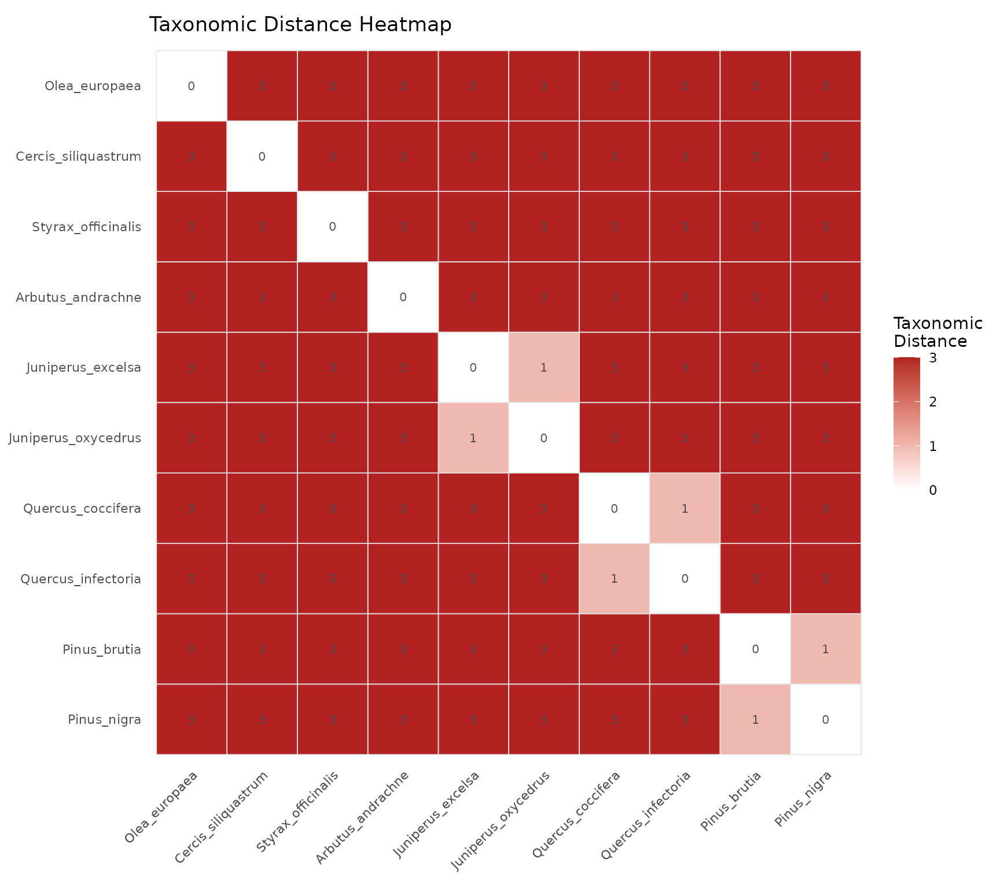
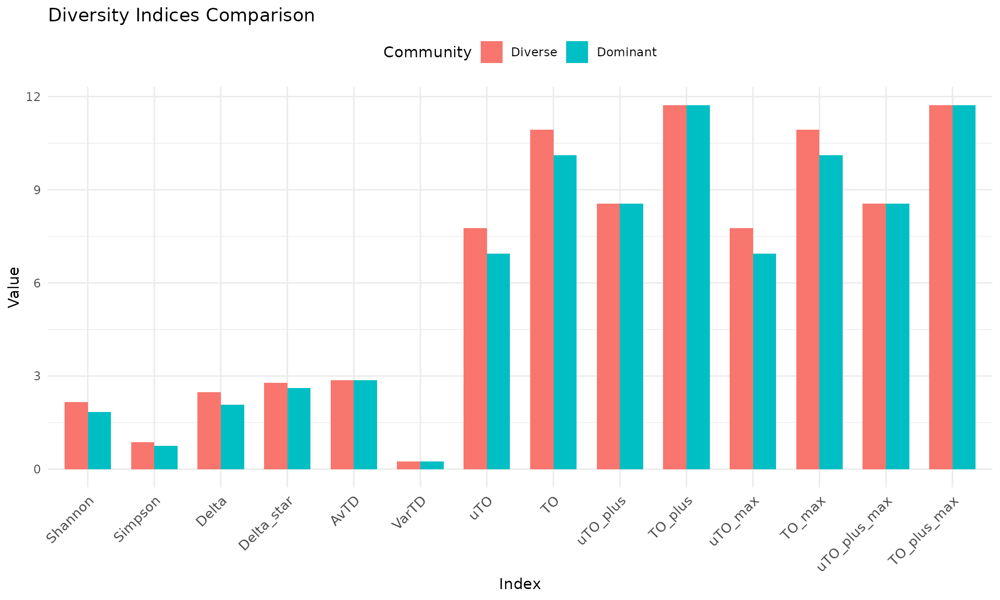
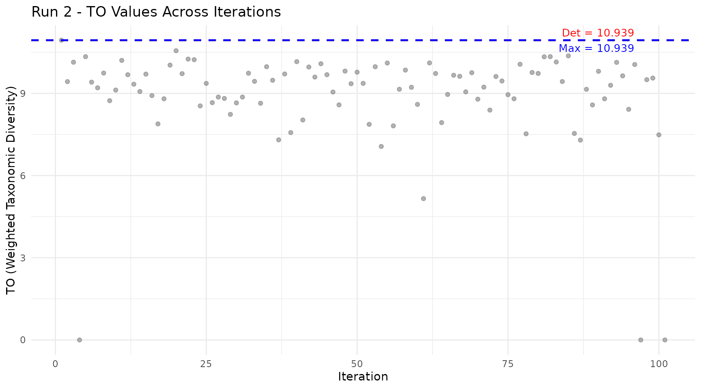
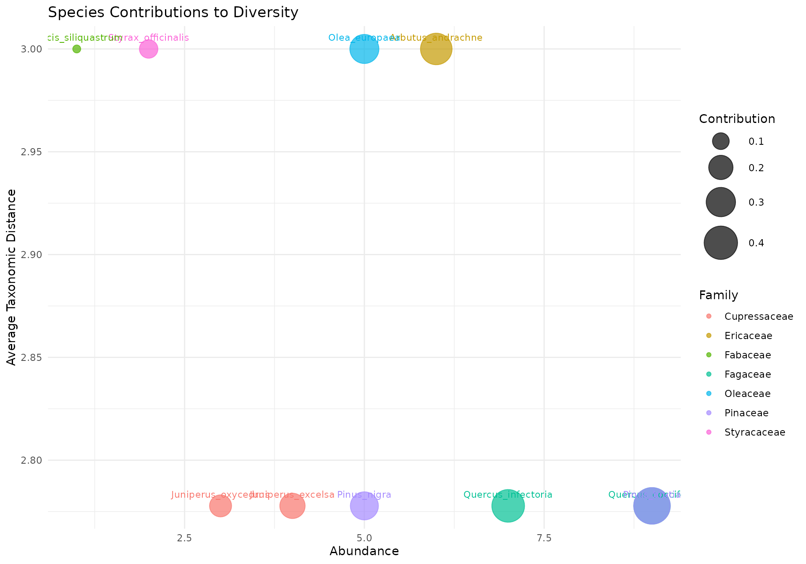
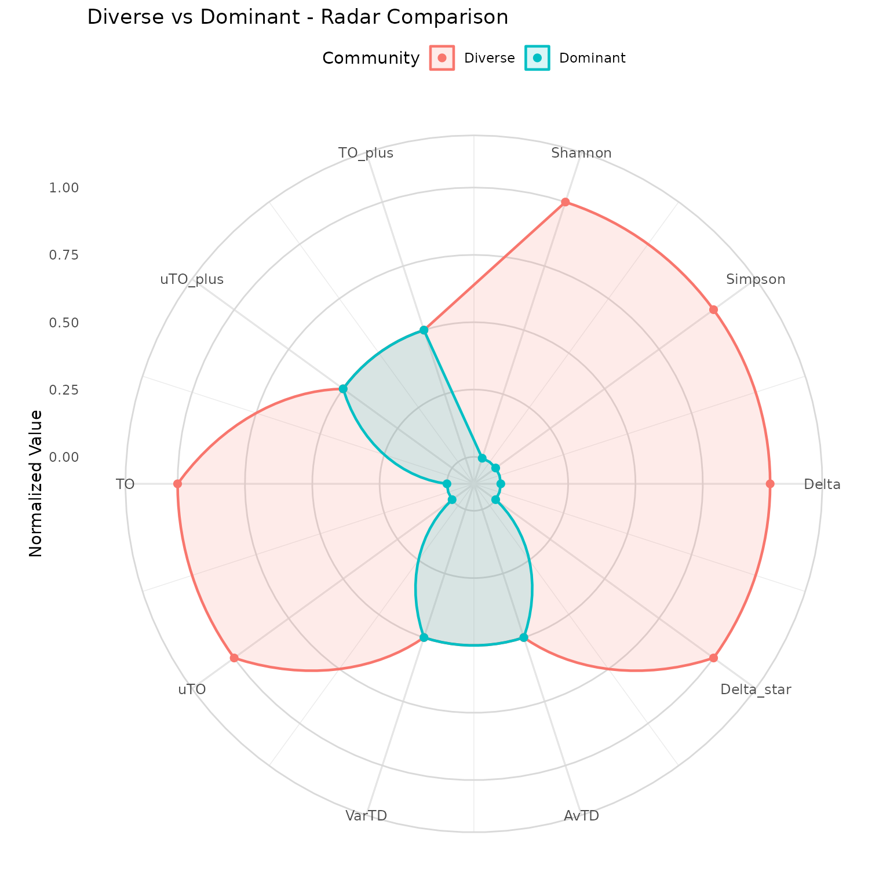
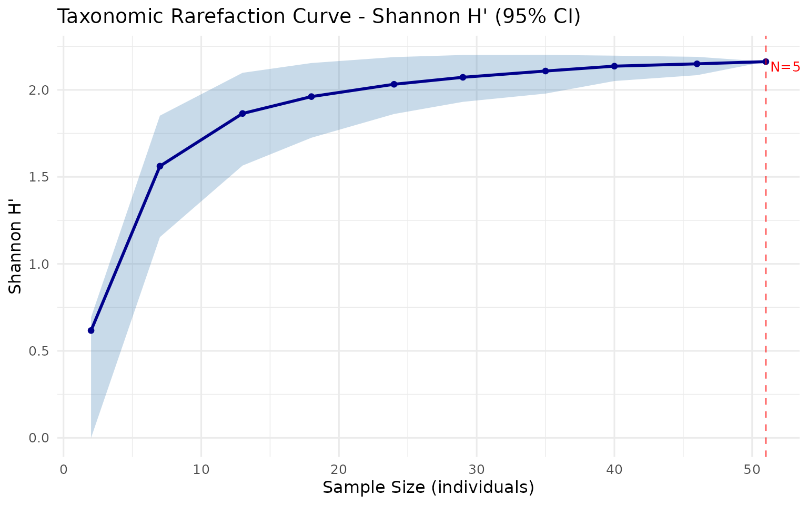

Overview
The taxdiv package provides tools for calculating taxonomic diversity indices that incorporate the hierarchical structure of biological classification. While traditional diversity indices like Shannon and Simpson only consider species abundances, taxonomic diversity measures account for the evolutionary and ecological relationships among species.
The package implements three main approaches:
- Classical diversity indices: Shannon and Simpson
- Clarke & Warwick taxonomic distinctness: Delta, Delta*, AvTD, VarTD
- Ozkan (2018) Deng entropy-based diversity: pTO and pTO+
Example Data: Mediterranean Forest Community
We will use a hypothetical Mediterranean forest community to demonstrate the package functionality. This community has 10 tree and shrub species with known abundances and a 4-level taxonomic hierarchy.
# Species abundances (individuals per plot)
community <- c(
Quercus_coccifera = 25,
Quercus_infectoria = 18,
Pinus_brutia = 30,
Pinus_nigra = 12,
Juniperus_excelsa = 8,
Juniperus_oxycedrus = 6,
Arbutus_andrachne = 15,
Styrax_officinalis = 4,
Cercis_siliquastrum = 3,
Olea_europaea = 10
)
# Taxonomic hierarchy
tax_tree <- build_tax_tree(
species = names(community),
Genus = c("Quercus", "Quercus", "Pinus", "Pinus",
"Juniperus", "Juniperus", "Arbutus", "Styrax",
"Cercis", "Olea"),
Family = c("Fagaceae", "Fagaceae", "Pinaceae", "Pinaceae",
"Cupressaceae", "Cupressaceae", "Ericaceae", "Styracaceae",
"Fabaceae", "Oleaceae"),
Order = c("Fagales", "Fagales", "Pinales", "Pinales",
"Pinales", "Pinales", "Ericales", "Ericales",
"Fabales", "Lamiales")
)
tax_tree
#> Species Genus Family Order
#> 1 Quercus_coccifera Quercus Fagaceae Fagales
#> 2 Quercus_infectoria Quercus Fagaceae Fagales
#> 3 Pinus_brutia Pinus Pinaceae Pinales
#> 4 Pinus_nigra Pinus Pinaceae Pinales
#> 5 Juniperus_excelsa Juniperus Cupressaceae Pinales
#> 6 Juniperus_oxycedrus Juniperus Cupressaceae Pinales
#> 7 Arbutus_andrachne Arbutus Ericaceae Ericales
#> 8 Styrax_officinalis Styrax Styracaceae Ericales
#> 9 Cercis_siliquastrum Cercis Fabaceae Fabales
#> 10 Olea_europaea Olea Oleaceae LamialesClassical Diversity Indices
Shannon and Simpson indices measure diversity based solely on species abundance distribution:
# Shannon diversity (natural log)
H <- shannon(community)
cat("Shannon H':", round(H, 4), "\n")
#> Shannon H': 2.0948
# Simpson indices
D <- simpson(community, type = "dominance")
GS <- simpson(community, type = "gini_simpson")
inv_D <- simpson(community, type = "inverse")
cat("Simpson dominance (D):", round(D, 4), "\n")
#> Simpson dominance (D): 0.1424
cat("Gini-Simpson (1-D):", round(GS, 4), "\n")
#> Gini-Simpson (1-D): 0.8576
cat("Inverse Simpson (1/D):", round(inv_D, 4), "\n")
#> Inverse Simpson (1/D): 7.0246These indices tell us about the evenness and richness of the community, but they do not consider that some species are taxonomically more distant from each other than others.
Taxonomic Distance
Before computing taxonomic diversity, we can examine the pairwise taxonomic distances between species:
dist_mat <- tax_distance_matrix(tax_tree)
round(dist_mat, 2)
#> Quercus_coccifera Quercus_infectoria Pinus_brutia
#> Quercus_coccifera 0 1 3
#> Quercus_infectoria 1 0 3
#> Pinus_brutia 3 3 0
#> Pinus_nigra 3 3 1
#> Juniperus_excelsa 3 3 3
#> Juniperus_oxycedrus 3 3 3
#> Arbutus_andrachne 3 3 3
#> Styrax_officinalis 3 3 3
#> Cercis_siliquastrum 3 3 3
#> Olea_europaea 3 3 3
#> Pinus_nigra Juniperus_excelsa Juniperus_oxycedrus
#> Quercus_coccifera 3 3 3
#> Quercus_infectoria 3 3 3
#> Pinus_brutia 1 3 3
#> Pinus_nigra 0 3 3
#> Juniperus_excelsa 3 0 1
#> Juniperus_oxycedrus 3 1 0
#> Arbutus_andrachne 3 3 3
#> Styrax_officinalis 3 3 3
#> Cercis_siliquastrum 3 3 3
#> Olea_europaea 3 3 3
#> Arbutus_andrachne Styrax_officinalis Cercis_siliquastrum
#> Quercus_coccifera 3 3 3
#> Quercus_infectoria 3 3 3
#> Pinus_brutia 3 3 3
#> Pinus_nigra 3 3 3
#> Juniperus_excelsa 3 3 3
#> Juniperus_oxycedrus 3 3 3
#> Arbutus_andrachne 0 3 3
#> Styrax_officinalis 3 0 3
#> Cercis_siliquastrum 3 3 0
#> Olea_europaea 3 3 3
#> Olea_europaea
#> Quercus_coccifera 3
#> Quercus_infectoria 3
#> Pinus_brutia 3
#> Pinus_nigra 3
#> Juniperus_excelsa 3
#> Juniperus_oxycedrus 3
#> Arbutus_andrachne 3
#> Styrax_officinalis 3
#> Cercis_siliquastrum 3
#> Olea_europaea 0Species in the same genus (e.g., Quercus coccifera and Q. infectoria) have distance 0 at all shared taxonomic levels, while species in different orders have the maximum distance.
Clarke & Warwick Taxonomic Distinctness
The Clarke & Warwick framework provides abundance-weighted and presence/absence-based measures:
# Delta: average taxonomic diversity (abundance-weighted)
d <- delta(community, tax_tree)
cat("Delta (taxonomic diversity):", round(d, 4), "\n")
#> Delta (taxonomic diversity): 2.3912
# Delta*: taxonomic distinctness (abundance-weighted, excludes same-species)
ds <- delta_star(community, tax_tree)
cat("Delta* (taxonomic distinctness):", round(ds, 4), "\n")
#> Delta* (taxonomic distinctness): 2.7668
# AvTD (Delta+): average taxonomic distinctness (presence/absence)
spp <- names(community)
avg_td <- avtd(spp, tax_tree)
cat("AvTD (Delta+):", round(avg_td, 4), "\n")
#> AvTD (Delta+): 2.8667
# VarTD (Lambda+): variation in taxonomic distinctness
var_td <- vartd(spp, tax_tree)
cat("VarTD (Lambda+):", round(var_td, 4), "\n")
#> VarTD (Lambda+): 0.2489Deng Entropy and Ozkan pTO
The Deng entropy framework (Deng, 2016) generalizes Shannon entropy through Dempster-Shafer evidence theory. At each taxonomic level, the mass function accounts for the number of species within each group (the “focal element size”), giving more weight to groups that contain more species.
Ozkan (2018) uses Deng entropy to construct four measures:
- uTO: Unweighted taxonomic diversity (uses slicing procedure)
- TO: Weighted taxonomic diversity (taxonomic levels weighted by rank)
- uTO+: Unweighted taxonomic distance (presence/absence, nk=0 only)
- TO+: Weighted taxonomic distance
result <- ozkan_pto(community, tax_tree)
cat("uTO (unweighted diversity):", round(result$uTO, 4), "\n")
#> uTO (unweighted diversity): 7.4895
cat("TO (weighted diversity):", round(result$TO, 4), "\n")
#> TO (weighted diversity): 10.6675
cat("uTO+ (unweighted distance):", round(result$uTO_plus, 4), "\n")
#> uTO+ (unweighted distance): 8.5502
cat("TO+ (weighted distance):", round(result$TO_plus, 4), "\n")
#> TO+ (weighted distance): 11.7283The Deng entropy values at each taxonomic level reveal the contribution of each hierarchical level to overall diversity:
cat("Deng entropy at each level:\n")
#> Deng entropy at each level:
for (i in seq_along(result$Ed_levels)) {
cat(" ", names(result$Ed_levels)[i], ":",
round(result$Ed_levels[i], 4), "\n")
}
#> Species : 2.3026
#> Genus : 2.5459
#> Family : 2.5459
#> Order : 2.9935At the species level, Ed equals ln(S) = ln(10) since all present species receive equal weight. At higher levels, the Deng correction term (2^|Fi| - 1) increases entropy for groups containing more species.
Convenience wrapper
The pto_components() function returns all four values as
a named vector:
pto_components(community, tax_tree)
#> uTO TO uTO_plus TO_plus uTO_max TO_max
#> 7.489477 10.667513 8.550230 11.728284 7.489477 10.667513
#> uTO_plus_max TO_plus_max
#> 8.550230 11.728284Comparing Communities
Taxonomic diversity measures are most useful when comparing communities. Here we compare our Mediterranean community with a species-poor community:
# Degraded community (fewer species, less taxonomic breadth)
degraded <- c(
Quercus_coccifera = 40,
Pinus_brutia = 35,
Juniperus_oxycedrus = 10
)
tax_degraded <- tax_tree[tax_tree$Species %in% names(degraded), ]
cat("=== Original community (10 species) ===\n")
#> === Original community (10 species) ===
cat("Shannon:", round(shannon(community), 4), "\n")
#> Shannon: 2.0948
r1 <- ozkan_pto(community, tax_tree)
cat("uTO+:", round(r1$uTO_plus, 4), "\n")
#> uTO+: 8.5502
cat("TO+:", round(r1$TO_plus, 4), "\n\n")
#> TO+: 11.7283
cat("=== Degraded community (3 species) ===\n")
#> === Degraded community (3 species) ===
cat("Shannon:", round(shannon(degraded), 4), "\n")
#> Shannon: 0.9718
r2 <- ozkan_pto(degraded, tax_degraded)
cat("uTO+:", round(r2$uTO_plus, 4), "\n")
#> uTO+: 5.3496
cat("TO+:", round(r2$TO_plus, 4), "\n")
#> TO+: 8.5277The degraded community shows lower diversity across all measures, but the taxonomic indices (uTO+, TO+) capture not only the loss of species richness but also the narrowing of taxonomic breadth.
Stochastic Resampling (Run 2)
The deterministic pTO calculation (Run 1) uses all species as they are. But how sensitive is the result to community composition? Run 2 explores this by randomly including or excluding each species with 50% probability across many iterations, then taking the maximum pTO value observed.
set.seed(42)
run2 <- ozkan_pto_resample(community, tax_tree, n_iter = 101, seed = 42)
cat("=== Run 1 (deterministic) ===\n")
#> === Run 1 (deterministic) ===
cat("uTO+:", round(run2$uTO_plus_det, 4), "\n")
#> uTO+: 8.5502
cat("TO+: ", round(run2$TO_plus_det, 4), "\n")
#> TO+: 11.7283
cat("uTO: ", round(run2$uTO_det, 4), "\n")
#> uTO: 7.4895
cat("TO: ", round(run2$TO_det, 4), "\n\n")
#> TO: 10.6675
cat("=== Run 2 (max across", run2$n_iter, "iterations) ===\n")
#> === Run 2 (max across 101 iterations) ===
cat("uTO+:", round(run2$uTO_plus_max, 4), "\n")
#> uTO+: 8.5502
cat("TO+: ", round(run2$TO_plus_max, 4), "\n")
#> TO+: 11.7283
cat("uTO: ", round(run2$uTO_max, 4), "\n")
#> uTO: 7.4895
cat("TO: ", round(run2$TO_max, 4), "\n")
#> TO: 10.6675The maximum values from Run 2 are always >= the deterministic values from Run 1, because the deterministic calculation is included as the first iteration.
We can examine how the pTO values vary across iterations:
Sensitivity Analysis (Run 3)
Run 3 refines the exploration by assigning species-specific inclusion probabilities based on the Run 2 results. Species that contributed to higher diversity in Run 2 get different inclusion probabilities than those that did not.
run3 <- ozkan_pto_sensitivity(community, tax_tree, run2, seed = 123)
cat("=== Run 3 (sensitivity analysis) ===\n")
#> === Run 3 (sensitivity analysis) ===
cat("Run 3 max uTO+:", round(run3$run3_uTO_plus_max, 4), "\n")
#> Run 3 max uTO+: 8.5502
cat("Run 3 max TO+: ", round(run3$run3_TO_plus_max, 4), "\n\n")
#> Run 3 max TO+: 11.7283
cat("=== Overall max (across Run 1 + 2 + 3) ===\n")
#> === Overall max (across Run 1 + 2 + 3) ===
cat("uTO+:", round(run3$uTO_plus_max, 4), "\n")
#> uTO+: 8.5502
cat("TO+: ", round(run3$TO_plus_max, 4), "\n")
#> TO+: 11.7283
cat("uTO: ", round(run3$uTO_max, 4), "\n")
#> uTO: 7.5029
cat("TO: ", round(run3$TO_max, 4), "\n")
#> TO: 10.6808The overall maximum across all three runs represents the “potential” taxonomic diversity of the community — the highest diversity that can be observed under different species compositions derived from the original community.
Species Inclusion Probabilities
Run 3 assigns each species a probability of being included in each iteration:
probs <- run3$species_probs
prob_df <- data.frame(
Species = names(probs),
Probability = round(probs, 4)
)
print(prob_df, row.names = FALSE)
#> Species Probability
#> Quercus_coccifera 0.8725
#> Quercus_infectoria 0.8725
#> Pinus_brutia 0.8725
#> Pinus_nigra 0.8725
#> Juniperus_excelsa 0.8725
#> Juniperus_oxycedrus 0.8725
#> Arbutus_andrachne 0.8725
#> Styrax_officinalis 0.8725
#> Cercis_siliquastrum 0.8725
#> Olea_europaea 0.8725Full Pipeline Summary
The complete Ozkan (2018) analysis pipeline runs three stages:
cat("Pipeline: Run 1 -> Run 2 -> Run 3\n\n")
#> Pipeline: Run 1 -> Run 2 -> Run 3
cat(" uTO+ TO+ uTO TO\n")
#> uTO+ TO+ uTO TO
cat("Run 1:", sprintf("%9.4f %9.4f %9.4f %9.4f",
run2$uTO_plus_det, run2$TO_plus_det,
run2$uTO_det, run2$TO_det), "\n")
#> Run 1: 8.5502 11.7283 7.4895 10.6675
cat("Run 2:", sprintf("%9.4f %9.4f %9.4f %9.4f",
run2$uTO_plus_max, run2$TO_plus_max,
run2$uTO_max, run2$TO_max), "\n")
#> Run 2: 8.5502 11.7283 7.4895 10.6675
cat("Run 3:", sprintf("%9.4f %9.4f %9.4f %9.4f",
run3$uTO_plus_max, run3$TO_plus_max,
run3$uTO_max, run3$TO_max), "\n")
#> Run 3: 8.5502 11.7283 7.5029 10.6808Each subsequent run finds values >= the previous run, reflecting the increasing exploration of the diversity landscape.
Rarefaction
Rarefaction curves allow you to evaluate whether your sampling effort
is sufficient to capture the diversity of the community. The
rarefaction_taxonomic() function computes bootstrap-based
rarefaction for any index supported by taxdiv:
rare <- rarefaction_taxonomic(community, tax_tree,
index = "shannon",
steps = 10, n_boot = 100, seed = 42)
cat("Rarefaction results (Shannon):\n")
#> Rarefaction results (Shannon):
print(round(rare, 4))
#> taxdiv -- Rarefaction Curve
#> Index: shannon
#> Total N: 131
#> Bootstrap: 100 replicates
#> CI: 95 %
#> Steps: 10
#>
#> sample_size mean lower upper sd
#> 3 0.9351 0.6365 1.0986 0.2374
#> 17 1.8396 1.5052 2.1621 0.1730
#> 31 1.9452 1.6796 2.1678 0.1207
#> 46 2.0298 1.8698 2.1666 0.0811
#> 60 2.0365 1.8982 2.1428 0.0676
#> 74 2.0614 1.9784 2.1361 0.0451
#> 88 2.0784 2.0000 2.1427 0.0413
#> 103 2.0847 2.0060 2.1335 0.0318
#> 117 2.0913 2.0513 2.1265 0.0200
#> 131 2.0948 2.0948 2.0948 0.0000The curve should reach a plateau if sampling is adequate. A steep curve at the maximum sample size indicates that more sampling is needed.
Visualization
The taxdiv package provides seven specialized plot types built on ggplot2. Each plot answers a different analytical question about taxonomic diversity.
Taxonomic Tree (Dendrogram)
Visualizes the taxonomic hierarchy of species as a dendrogram. Species on the same branch share closer taxonomic classification:
plot_taxonomic_tree(tax_tree, community = community,
color_by = "Family", label_size = 3.5,
title = "Mediterranean Forest - Taxonomic Tree")
How to read: Species emerging from the same branch are taxonomically close. Numbers in parentheses show abundance. Colors indicate family groupings. Longer branches represent greater taxonomic distance.
Taxonomic Distance Heatmap
Displays the pairwise taxonomic distance matrix as a color grid:
plot_heatmap(tax_tree, label_size = 2.8,
title = "Taxonomic Distance Heatmap")
How to read: Dark red cells indicate distant species pairs, white cells indicate closely related species. Each cell value is the taxonomic distance (0 = same genus, higher = more distant). The diagonal is always zero.
Community Comparison (Bar Plot)
Comparing diversity indices across communities reveals how different disturbance types affect taxonomic structure. We create a second community where one species dominates:
# Dominant community: same species, uneven abundances
dominant_community <- c(
Quercus_coccifera = 80, Quercus_infectoria = 5,
Pinus_brutia = 3, Pinus_nigra = 2,
Juniperus_excelsa = 2, Juniperus_oxycedrus = 1,
Arbutus_andrachne = 3, Styrax_officinalis = 1,
Cercis_siliquastrum = 2, Olea_europaea = 1
)
communities <- list(
Diverse = community,
Dominant = dominant_community
)
comparison <- compare_indices(communities, tax_tree, plot = TRUE)
comparison$plot
How to read: Abundance-weighted indices (Shannon, Simpson, Delta, TO) differ markedly between the two communities because they detect the uneven distribution. Presence/absence indices (AvTD, VarTD, uTO+, TO+) remain identical because both communities have the same species list. This illustrates why both types of measures are needed for a complete assessment.
Index values:
comparison$table
#> taxdiv -- Index Comparison
#> Communities: 2
#> Indices: Shannon, Simpson, Delta, Delta_star, AvTD, VarTD, uTO, TO, uTO_plus, TO_plus, uTO_max, TO_max, uTO_plus_max, TO_plus_max
#>
#> Community N_Species Shannon Simpson Delta Delta_star AvTD VarTD
#> Diverse 10 2.094838 0.857642 2.391192 2.766816 2.866667 0.248889
#> Dominant 10 0.911571 0.354200 0.908485 2.539243 2.866667 0.248889
#> uTO TO uTO_plus TO_plus uTO_max TO_max uTO_plus_max
#> 7.489477 10.667513 8.55023 11.72828 7.489477 10.667513 8.55023
#> 5.207604 8.380285 8.55023 11.72828 5.207604 8.380285 8.55023
#> TO_plus_max
#> 11.72828
#> 11.72828Iteration Plot (Run 2)
Shows how pTO values change across stochastic resampling iterations:
plot_iteration(run2, component = "TO",
title = "Run 2 - TO Values Across Iterations")
How to read:
- Grey dots: TO value for each iteration (random species subset)
- Red line: Deterministic value from Run 1 (all species included)
- Blue line: Maximum value found across all iterations
Low points correspond to iterations where few species were included (lower diversity). Points above the red line indicate subcommunities with higher diversity than the full community, which occurs when removing certain species increases the ratio of between-group to within-group diversity.
Bubble Chart
Shows each species’ contribution to community diversity based on abundance and average taxonomic distance to all other species:
plot_bubble(community, tax_tree, color_by = "Family",
title = "Species Contributions to Diversity")
How to read:
- X-axis: Abundance (number of individuals)
- Y-axis: Average taxonomic distance to all other species
- Bubble size: Contribution weight (abundance x distance)
Species in the upper right corner contribute most to taxonomic diversity (both abundant and taxonomically distinct). An isolated species with low abundance (lower right) contributes less than a taxonomically unique species that is also abundant.
Radar Chart (Spider Plot)
Provides a multivariate comparison of all indices simultaneously:
plot_radar(communities, tax_tree,
title = "Diverse vs Dominant - Radar Comparison")
#> Warning: Removed 2 rows containing missing values or values outside the scale range
#> (`geom_point()`).
How to read: Each axis represents one diversity index, normalized to 0-1 range. A larger area indicates higher overall diversity. The shape reveals which aspects of diversity differ between communities. When the diverse and dominant community polygons overlap on presence/absence indices but diverge on abundance-weighted indices, it confirms that both communities share the same species pool but differ in evenness.
Rarefaction Curve
Visualizes how diversity estimates change with increasing sample size:
plot_rarefaction(rare)
How to read: The x-axis shows the number of individuals sampled, the y-axis shows the estimated diversity index. The shaded band is the 95% bootstrap confidence interval. If the curve reaches a plateau at maximum sample size, your sampling effort is sufficient. A steep curve at the right edge suggests more sampling is needed to capture the full diversity.
References
- Deng, Y. (2016). Deng entropy. Chaos, Solitons & Fractals, 91, 549-553.
- Ozkan, K. (2018). A new proposed measure for estimating taxonomic diversity. Turkish Journal of Forestry, 19(4), 336-346.
- Clarke, K.R. & Warwick, R.M. (1998). A taxonomic distinctness index and its statistical properties. Journal of Applied Ecology, 35, 523-531.
- Warwick, R.M. & Clarke, K.R. (1995). New ‘biodiversity’ measures reveal a decrease in taxonomic distinctness with increasing stress. Marine Ecology Progress Series, 129, 301-305.